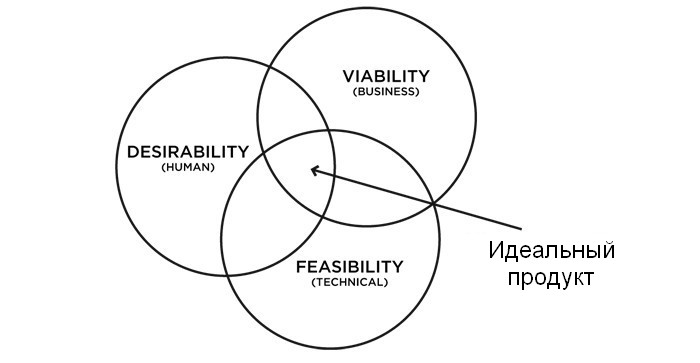

Планирование и организация работы
Профессии в вебе
- Задача
- Дизайн
- Верстка
- JavaScript
- Бэкэнд
- База Данных
- Текст
- Иллюстрации
- Маркетинг
- SEO
На этом курсе
- Задача
- Дизайн
- Верстка
- JavaScript
- CMS
- Текст
- Иллюстрации
- Маркетинг
- SEO
Типы сайтов
Какие задачи он должен решать?
- Визитка. Направить клиентов/аудиторию на ваши сайты/соц. сети
- Портфолио. Показать клиенту/работадателю ваши работы, чтобы вас наняли.
- Лэндинг. Продать один товар или услугу.
- Онлайн-магазин. Продавать продукты с возможностью поиска, сортировки, фильтрации, отзывами и т.п.
- Каталог. Если вы хотите продавать не онлайн, а чтобы клиент позвонил/написал менеджеру. Может быть частью магазина.
- Сайт комапнии. Показать, что вы делаете. Показать, чем вы лучше, отличаетесь от других. Сам продукт онлайн (яндекс, гугл, вкнотакте) всегда лучше, чем сайт компании без цели.
- Новостой сайт. Информировать о чем-то вашу аудиторию, чтобы они заходили на сайт каждый день.
- Блог. То же самое, но в меньшем масштабе. Регулярно выкладывать контент.
- Онлайн-сервис. Выполняет какую-то задачу пользователя (рекомендации, соц. сеть, обработка информации, услуги).
Этапы работы
Веб-сайты/приложения
- Планирование
- Разработка
- Продакшен/Поддержка
Фото/видео
- Пре-продакшен
- Продакшен
- Пост-продакшен
Ваша аудитория
- Ваш продукт — не для всех (кроме случаев, когда для всех)
- Вы — не ваша аудитория (кроме случаев, когда да)
Ваша аудитория — люди, а значит:
Дефицит внимания. Время, которые люди проводят над каждой страницей/статьей/постом измеряется в секундах (есть исключения). Для людей — вы всего лишь один голос в океане шума. Измените это.
Интересы
Дизайн — Бизнес — Пользователи

Варианты
- Способы решения проблемы лучше продумать на стадии планирования настолько, насколько это возможно.
- Исследования. Учитесь на чужих ошибках.
- Здесь уже можно использовать фидбек и тестирование.
Ресурсы
Какими ресурсами вы располагаете? Сколько вы потратите и сколько хотите получить нужно определить заранее.
- Время. Нельзя купить, но можно сэкономить.
- Люди. Сложно найти хорошего специалиста, с которым у вас совпадает вектор движения. Можно научить, это дольше.
- Деньги. Чтобы заработать, нужно тратить.
- Инфраструктура. Техника, хостинг, сервер и т.п. Должны быть заранее расчитаны с запасом.
Инструменты
- Инструмент должен максиммально эффективно и удобно решать проблему.
- Должен подходить для задачи. Забивание гвоздей микроскопом.
- Есть инструменты хуже и лучше других.
- Нужно совершенствовать навыки владения инструментом.
- Инструмент должен экономить больше времени, чем вы тратите на обучение и его настройку.
Фичи и сроки
- Нужно сразу решить, не только что будет в вашем продукте, но и порядок важности фичей.
- При нарушении срока — отказывайтесь от наименее нужного. Можно доделать потом.
- Не обещайте пользователям все фичи сразу. Пусть лучше они станут сюрпризом.
- Выставляйте сроки с запасом. Можно выставить/корректировать сроки после начала работы, чтобы понять, с какой скоростью вы работаете.
Фичи и сроки
Время, Бюджет, Качество и Функционал. Нельзя одновременно гарантировать всё. Отказ от части функций — наименее болезненный.
Решение проблем
Лучший способ решить проблемы — избегать их!
- Крайности
- Недопонимание
- Обещания и ожидания
- Автоматизация
- Исследования и анализ
- Тестирование и фидбек
- Системы организации работы
Крайности
- Не впадайте в крайности.
- Крайности исключают анализ проблемы. В них легко скатиться, они всегда на виду. Но мир вокруг нас устроен сложнее. На любое дело влияют 1000 вещей, о части которых мы даже не узнаем. Выбирая крайности, вы отсекаете понимание нюансов проблемы.
Баланс
- Ищите баланс.
- Баланс не всегда посередине. Нужно принимать решения, которые принесут максимальную эффективность, в зависимости от ваших целей.
Недопонимание
Закон: если кто-то может что-то понять неправильно, так и произойдет. Вывод: избегайте возможности недопонимания.
- Не пытайтесь читать мысли. Люди не умеют их читать, но постоянно пытаются.
- Не бывает очевидных вещей. То что очевидно вам, может быть новостью для другого.
- Письменная речь (почта) позволяют сократить недопомнание. Документируйте переговоры, задачи и рабочий процесс.
Обещания и ожидания
Чтобы не нарушать обещаний, не нужно обещать то, в чем вы не уверены. Чтобы быть увереным, нужно планировать.
Лучше дать больше, чем обещал, чем меньше. Поэтому обещайте меньше, чем собираетесь дать.
Автоматизация
Многие задачи можно автоматизировать. Есть готовые инстурменты. То чего нет, может написать программист.
Если что-то проще и быстрее сделать без автоматизации, то она не нужна.
Чем больше проект (или чем больше регулярных однотипных проектов) и чем больше в нем людей, тем нужнее там автоматизация и системы.
Способы автоматизации
Принцип: если вы регулярно выполняете одинаковые действия, их стоит автоматизировать.
- Дизайн-системы
- Системы сборки сайтов
- Системы именования классов
- Методы оформления кода
- Скрипты (программы), выполняющие монотонную работу
Исследования
Сбор требований от бизнеса, пользователей и разработчиков в соответствии с целями. Требования могут менятсья в процессе разработки. Существуют программы для управления требованиями.
Анализ стоимости требований.
Тестирование и фидбек
Найти ошибки и недочеты можно только при проверке на практике.
Проверяйте все возможные сценарии использвоания вашего продукта. Много голов всегда лучше одной. Даже 10 пользователей найдут за час то, что вы не нашли бы за день.
Не существует недополученной прибыли. Существует упущенная. Проанализируйте ошибки и смените стратегию.
Системы организации работы
Итеративная и другие модели разработки
Методологии (Agile, Scrum и т.п)
CRM